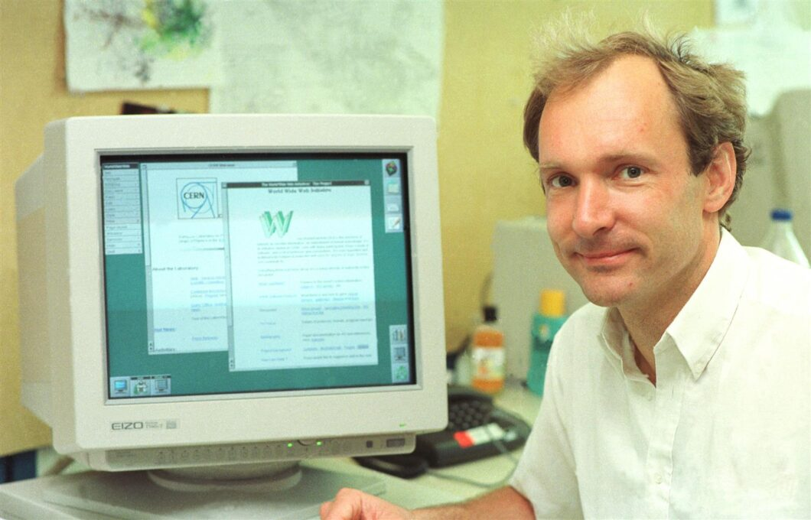

Conheça a evolução da Internet e da World Wide Web, desde as primeiras redes de computadores até as aplicações Web modernas.
A Internet e a Web fazem parte do cotidiano de bilhões de pessoas. Apesar de muitas vezes serem utilizadas como sinônimos, Internet e Web não são exatamente a mesma coisa.
A Internet é uma grande rede mundial que conecta computadores e outros dispositivos. Já a World Wide Web é um dos serviços que funciona sobre essa rede, permitindo acessar páginas e aplicações por meio de navegadores.
Ao longo do tempo, diversas tecnologias foram criadas para tornar essa comunicação possível, como o TCP/IP, DNS, HTML e HTTP.
As primeiras redes de computadores começaram a ser desenvolvidas com o objetivo de permitir a comunicação e o compartilhamento de informações entre diferentes computadores.
A ARPANET foi criada nos Estados Unidos como uma rede experimental financiada pela ARPA. Ela conectava inicialmente computadores de instituições de pesquisa e é considerada um dos principais antecedentes da Internet.
Foram desenvolvidos os protocolos TCP (Transmission Control Protocol) e IP (Internet Protocol), responsáveis por estabelecer regras para a comunicação e o encaminhamento de dados entre diferentes redes.
O TCP/IP tornou possível que diferentes redes pudessem se comunicar utilizando um conjunto comum de protocolos.
Em 1983, a ARPANET passou oficialmente a utilizar o conjunto de protocolos TCP/IP. Esse acontecimento foi muito importante para a interligação de diferentes redes.
O DNS (Domain Name System) foi criado para facilitar a localização de computadores na rede. Em vez de memorizar endereços numéricos, como 192.0.2.1, os usuários poderiam utilizar nomes de domínio.
Em 1989, o cientista britânico Tim Berners-Lee, trabalhando no CERN, propôs um sistema para facilitar o compartilhamento e a consulta de informações pela Internet. Esse projeto deu origem à World Wide Web (WWW).
Uma referência importante sobre esse momento é a proposta original de Tim Berners-Lee apresentada ao CERN.
Tim Berners-Lee desenvolveu o HTML (HyperText Markup Language), uma linguagem utilizada para estruturar documentos que seriam exibidos na Web.
O HTML utiliza elementos como títulos, parágrafos, links, imagens, listas e tabelas para organizar o conteúdo de uma página.
O HTTP (HyperText Transfer Protocol) foi criado para permitir a comunicação entre clientes e servidores na Web.
Quando uma pessoa acessa uma página, o navegador atua como cliente e solicita informações a um servidor Web utilizando protocolos de comunicação.
Também foi desenvolvido o primeiro servidor Web. Ele era responsável por armazenar e disponibilizar documentos para serem acessados pela rede.
Tim Berners-Lee criou o primeiro navegador Web, inicialmente chamado WorldWideWeb. O navegador permitia acessar documentos e seguir hiperlinks.
Com o surgimento de navegadores gráficos e a expansão do acesso à Internet, a Web passou a ser utilizada por um número cada vez maior de pessoas, empresas e instituições.
A chamada Web 1.0 era caracterizada principalmente por páginas estáticas. O usuário normalmente acessava informações publicadas por um site, com pouca possibilidade de interação ou participação.
As aplicações Web modernas são muito mais interativas. Elas permitem login, comentários, edição de conteúdo, compras, mensagens, vídeos, armazenamento de dados e diversas outras funcionalidades.
Atualmente, muitas aplicações são executadas diretamente no navegador e utilizam servidores, bancos de dados e diversas tecnologias para oferecer experiências semelhantes às de programas instalados no computador.

Tim Berners-Lee foi o criador da World Wide Web enquanto trabalhava no CERN. Seu trabalho foi fundamental para a criação das tecnologias que permitiram a publicação e o acesso a documentos conectados por hiperlinks.
Uma frase associada à visão de Berners-Lee sobre a Web é: "A Web é mais uma criação social do que técnica."
| Ano | Acontecimento | Importância para a Web ou Internet |
|---|---|---|
| 1960–1970 | Surgimento das redes de computadores | Criou as bases para a comunicação entre computadores. |
| 1969 | ARPANET | Uma das principais precursoras da Internet moderna. |
| 1970–1980 | Desenvolvimento do TCP/IP | Estabeleceu protocolos para a comunicação entre redes. |
| 1983 | Adoção do TCP/IP | Facilitou a interligação de diferentes redes. |
| 1983 | Criação do DNS | Facilitou o acesso aos serviços por meio de nomes de domínio. |
| 1989 | Proposta da World Wide Web | Deu início ao desenvolvimento da Web. |
| 1990 | Criação do primeiro servidor Web | Permitiu disponibilizar documentos através da Web. |
| 1990 | Criação do primeiro navegador Web | Permitiu visualizar documentos e navegar por hiperlinks. |
| 1991 | Disponibilização da Web ao público | A Web começou a ser utilizada de forma mais ampla. |
| A evolução dessas tecnologias contribuiu para a Internet e a Web que utilizamos atualmente. | ||
Os endereços IP utilizam números para identificar dispositivos dentro das redes. No IPv4, um endereço possui 32 bits, enquanto o IPv6 utiliza 128 bits.
Um exemplo de endereço IPv4 pode ser representado como: 192.0.2.11.
O termo WWW significa World Wide Web.
A expressão HTML significa HyperText Markup Language.
Para saber mais sobre a história da Internet e da Web, consulte: